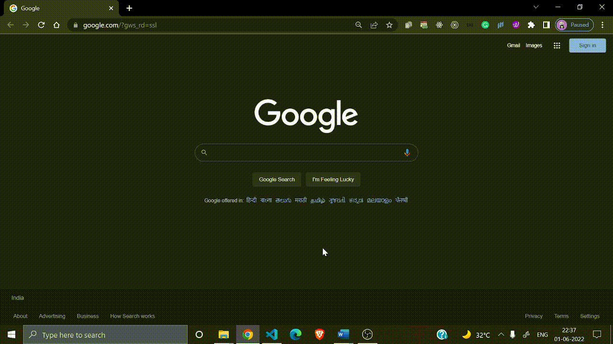

HTML Prerequisite
Tools needed to make an HTML page:
1) HTML Editors: It is a simple tool in which every piece of HTML content has to be written.
We can use
any text editor as per our choice. Here we are using Visual studio code because it is lightweight and
open-source.
Commonly used editors:
NOTE: You can write HTML even in a Notepad. Text editors like VS code make these things easier.
Installation of Visual Studio Code:
- Go to Google
- Type Visual studio code download
- Click on download and install it as per your OS
Refer to the video to understand clearly:
2) Browser: HTML tags are not displayed by browsers, but are read and interpreted by them. In a web browser, HTML structures are rendered into a styled and pretty form. Here we are using google chrome.
Commonly used browsers:
Using any editor and any browser, we will be able to render pages.
NOTE: In addition, we are installing a live server extension in our Vscode editor to view live reload
pages.
live server extension is used to launch a local development server with a live reload feature for
HTML pages.
Refer to the video to understand clearly:
.webp)